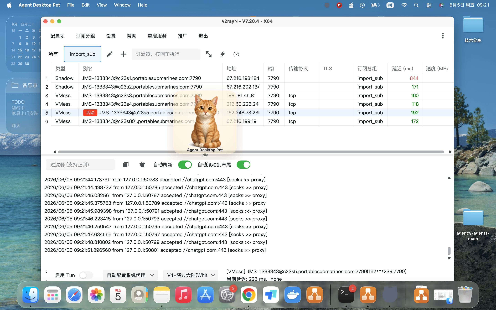
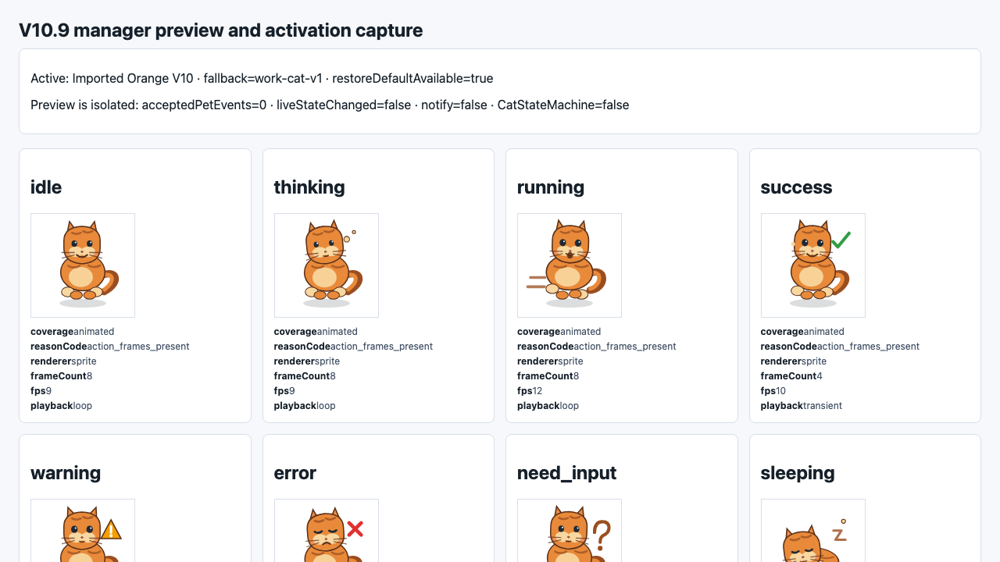
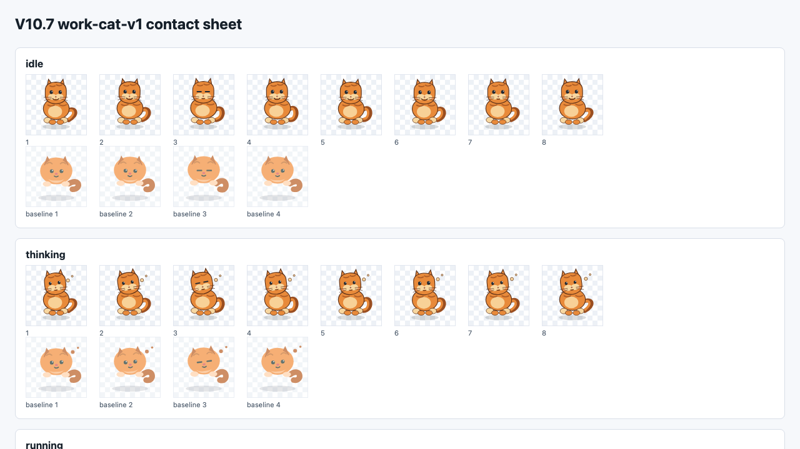
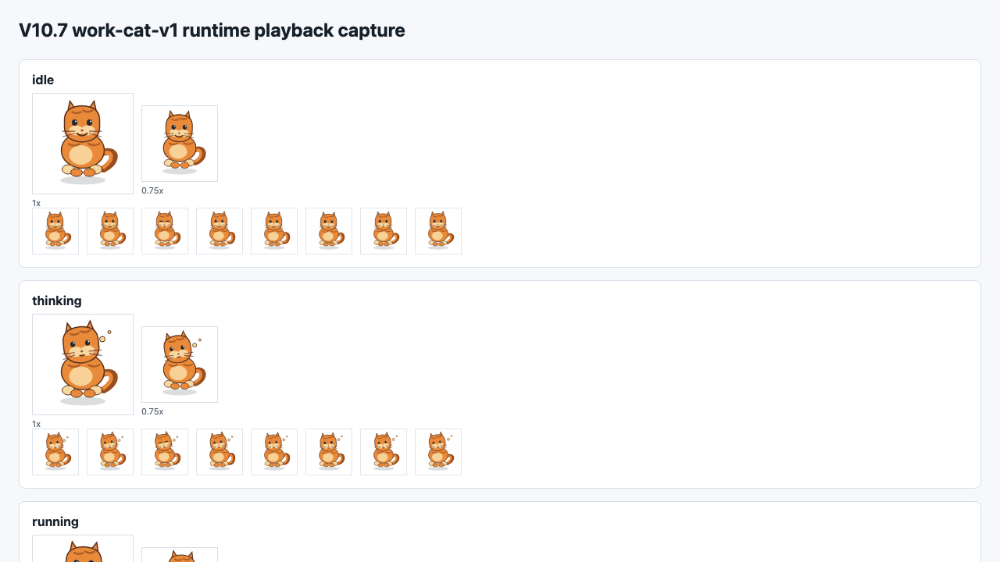
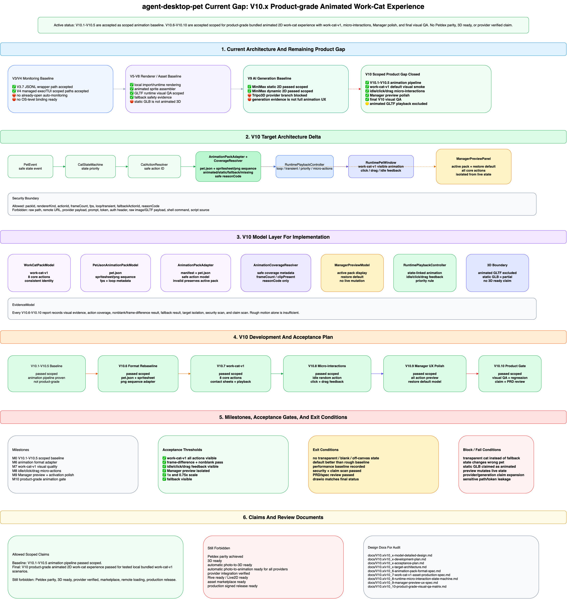

最终允许声明
V10 product-grade animated 2D work-cat experience passed for tested local bundled work-cat-v1 scenarios.
这代表本地内置 work-cat-v1 的 2D 动画工作猫体验已经通过 scoped 验收，包括动作包、运行态动画、微交互、Manager 预览和最终回归。
项目：Agent Desktop Pet；日期：2026-06-05；范围：V10 product-grade animated 2D work-cat scoped acceptance。
验收结论：PassedV10 product-grade animated 2D work-cat experience passed for tested local bundled work-cat-v1 scenarios.
这代表本地内置 work-cat-v1 的 2D 动画工作猫体验已经通过 scoped 验收，包括动作包、运行态动画、微交互、Manager 预览和最终回归。
不声明 Petdex parity、3D ready、automatic photo-to-3D ready、provider integration verified、production signed release ready、cross-platform ready、Windows ready。
V10 的结论严格限定在本地 bundled 2D animated work-cat 路径。
pnpm --filter desktop checkpnpm --filter desktop test，99 testsnode scripts/v10_7_work_cat_v1_visual_smoke.mjsnode scripts/v10_9_manager_preview_activation_smoke.mjs
docs/V10.x/evidence/v10_desktop_runtime_running_screenshot_2026-06-05.png

work-cat-v1 覆盖 idle、thinking、running、success、warning、error、need_input、sleeping。

docs/V10.x/v10_x-product-grade-final-acceptance-report.mddocs/V10.x/v10_x-evidence-index.mddocs/V10.x/evidence/v10_7-work-cat-v1-visual-smoke-2026-06-04.mddocs/V10.x/evidence/v10_8-runtime-micro-interaction-smoke-2026-06-04.mddocs/V10.x/evidence/v10_9-manager-preview-activation-smoke-2026-06-04.mddocs/V10.x/evidence/v10_desktop_runtime_running_screenshot_2026-06-05.png本轮复验没有发现 High 级规格漂移或虚假验收风险。V10 的能力边界清楚：它已完成本地 bundled 2D 动画工作猫体验，但没有扩展到 Petdex 完全等价、真实 3D 动画、自动 photo-to-3D、provider 集成或生产签名分发。
下一阶段如果继续提升体验，应另起阶段处理更高质量动画资产、骨骼/Rive/Live2D、真实 animated GLTF 或分发体系，不能把这些倒灌到 V10 claim。